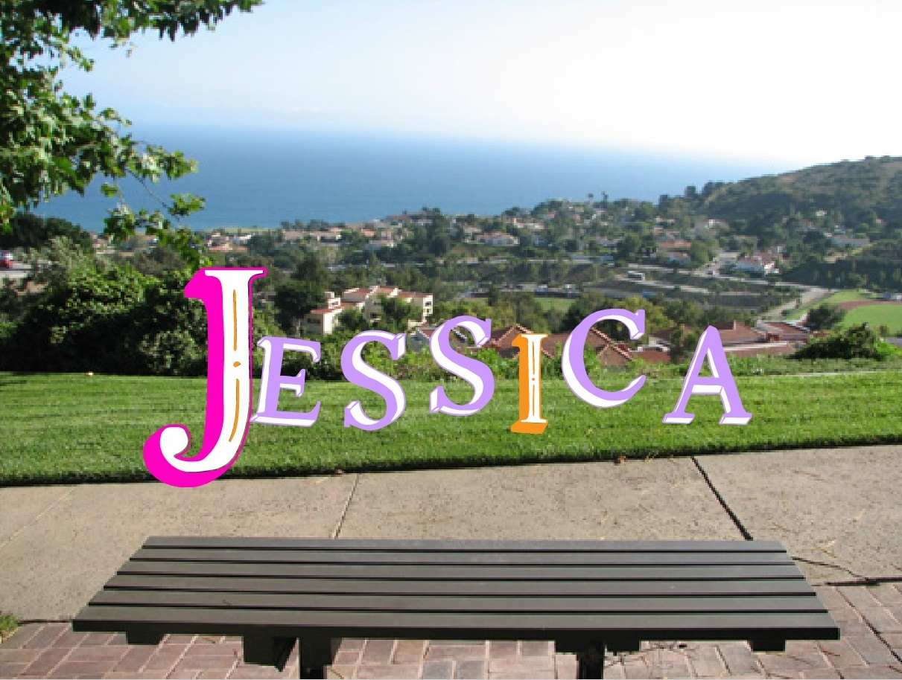
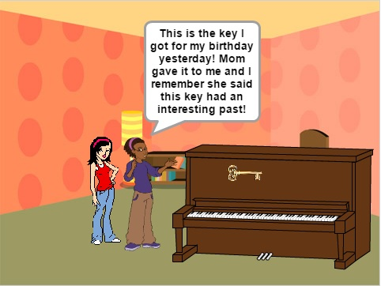

Name Assignment

Description:
Use scratch to design and create a program that shows my name. The requirements were to have a sprite for each letter in my name and give them at least 3 unique behaviors. The program needed to run when the green flag was clicked and for extra credit, I programmed to sprites to reset the scene to the beginning each time the green flag was clicked.
Concepts Learned:
- Using event blocks - used when green flag clicked to start the program, when key pressed to control the letter “s”
- Conditional statements - I used if statements to control when if a key was pressed the letter would do a certain behavior
- Used loops - I used a forever block to control the if statements for when certain keys were pressed, therefore, they would forever do that behavior. I used a repeat block for controlling how many times one of my letters was going to get bigger in size or move a certain number of steps
- Sprites - I created my own sprites using the sprite editor. I also used the library of sprites to find letters in my name and adjusted the costumes’ colors to ones I liked. I also adjusted the costumes to different colors and programmed the sprites to change costumes as some of my behaviors
- Movement - I used the x and y values to make my sprites move to their original location when the green flag was clicked. I also used the keys on the keyboard to program certain letters to move up and down when a pressed a particular key
Computer Buying Project

Description
Use scratch to design and create a program for buying a computer for my sister. The requirements were to have a title scene with my group members’ names, all 4 computer options, an interview scenario for the interview process, a winning computer and why that computer won, and answering questions. The program needed to run from the beginning when the green flag was clicked and have sprites that weren’t part of the first scene to remain hidden.
Concepts Learned:
- Sprites - I created my own sprites using the sprite editor, and edited some other sprites. I also used the library of sprites to find some of the other sprites in my program. In this project, I used many more sprites than in the name project
- Viewing - I used a lot of hide and show blocks to hide and show different sprites in the scenes. I also used the hide and show blocks to hide and show different sprites when the scenes switched
- Backdrops - I switched the backdrop to show the next scenes. I often used this for the computer sprites and after their dialogue to signal a different computer speaking
- Using event blocks - I used a lot of event blocks to help switch backdrops. I used the when backdrop switches to block so the program would continue without pressing a button
Scratch Final Project

Description
Use scratch to design and create a program that tells a story or a game using all the concepts that we have learned and more. When the green flag was clicked, the program had to run from the beginning all the way through on it’s own. I chose to create a story and the requirements were to have at least 4 scenes, have a conversation between sprites, use broadcast to change slides, and animate the sprites’ movements.
Concepts Learned:
- Dialogue - I used the wait 1 second blocks to help create a conversation between sprites. When one sprite is talking, the other will wait a certain number of seconds and then talk due to the wait 1 second blocks. I also used broadcast here. When one sprite sends a broadcast the other will receive it and say something in return
- Using event blocks - I used broadcast to switch the scenes by programming one sprite to send a broadcast and the backdrop would receive the broadcast and then switch backdrops
- Movement - I programmed the people in my story to walk across the screen when they were done talking. To do this, I picked sprites that had multiple costumes and switched costumes and added the wait 0.25 seconds and moving 20 steps to make it look like the sprite was walking and repeated this several times until the sprite arrived at the other side of the screen